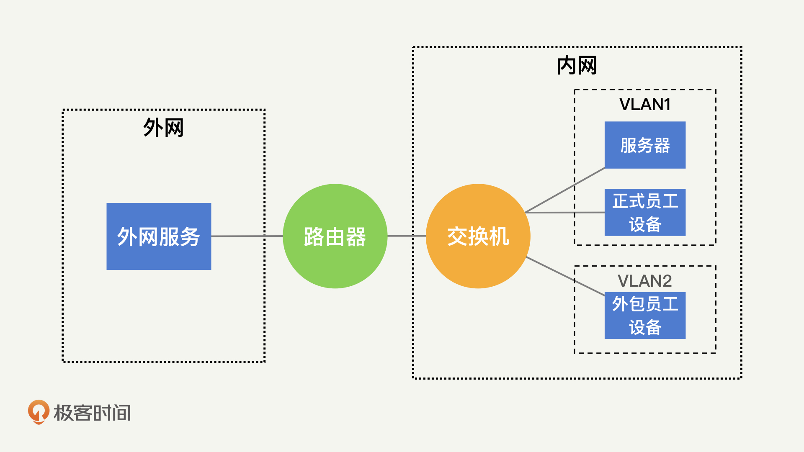
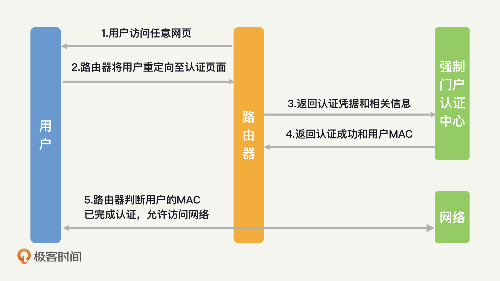
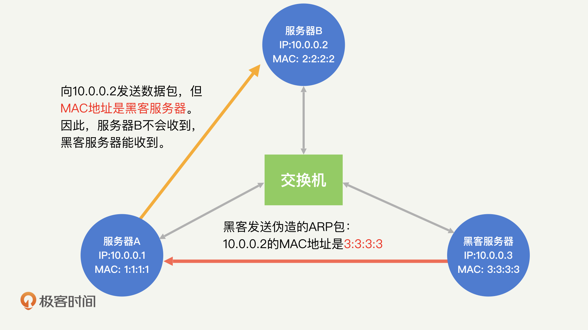
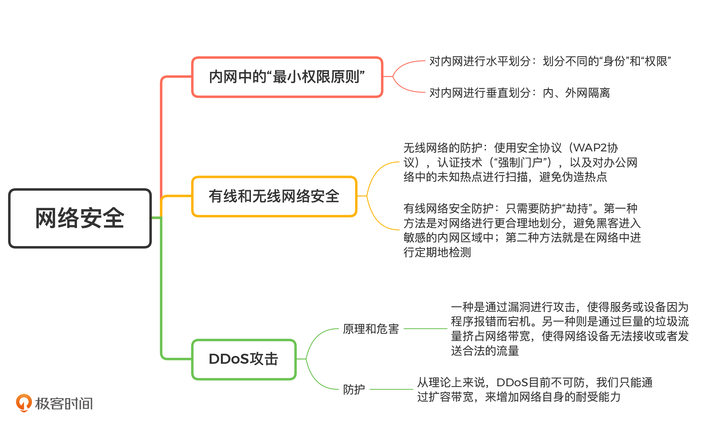

- 00 开篇词 别说你没被安全困扰过.md.html
- 01 安全的本质：数据被窃取后，你能意识到问题来源吗？.md.html
- 02 安全原则：我们应该如何上手解决安全问题？.md.html
- 03 密码学基础：如何让你的密码变得“不可见”？.md.html
- 04 身份认证：除了账号密码，我们还能怎么做身份认证？.md.html
- 05 访问控制：如何选取一个合适的数据保护方案？.md.html
- 06 XSS：当你“被发送”了一条微博时，到底发生了什么？.md.html
- 07 SQL注入：明明设置了强密码，为什么还会被别人登录？.md.html
- 08 CSRF_SSRF：为什么避免了XSS，还是“被发送”了一条微博？.md.html
- 09 反序列化漏洞：使用了编译型语言，为什么还是会被注入？.md.html
- 10 信息泄露：为什么黑客会知道你的代码逻辑？.md.html
- 11 插件漏洞：我的代码看起来很安全，为什么还会出现漏洞？.md.html
- 13 Linux系统安全：多人共用服务器，如何防止别人干“坏事”？.md.html
- 14 网络安全：和别人共用Wi-Fi时，你的信息会被窃取吗？.md.html
- 15 Docker安全：在虚拟的环境中，就不用考虑安全了吗？.md.html
- 16 数据库安全：数据库中的数据是如何被黑客拖取的？.md.html
- 17 分布式安全：上百个分布式节点，不会出现“内奸”吗？.md.html
- 18 安全标准和框架：怎样依“葫芦”画出好“瓢”？.md.html
- 19 防火墙：如何和黑客“划清界限”？.md.html
- 20 WAF：如何为漏洞百出的Web应用保驾护航？.md.html
- 21 IDS：当黑客绕过了防火墙，你该如何发现？.md.html
- 22 RASP：写规则写得烦了？尝试一下更底层的IDS.md.html
- 23 SIEM：一个人管理好几个安全工具，如何高效运营？.md.html
- 24 SDL：怎样才能写出更“安全”的代码？.md.html
- 25 业务安全体系：对比基础安全，业务安全有哪些不同？.md.html
- 26 产品安全方案：如何降低业务对黑灰产的诱惑？.md.html
- 27 风控系统：如何从海量业务数据中，挖掘黑灰产？.md.html
- 28 机器学习：如何教会机器识别黑灰产？.md.html
- 29 设备指纹：面对各种虚拟设备，如何进行对抗？.md.html
- 30 安全运营：“黑灰产”打了又来，如何正确处置？.md.html
- 加餐1 数据安全：如何防止内部员工泄露商业机密？.md.html
- 加餐2 前端安全：如何打造一个可信的前端环境？.md.html
- 加餐3 职业发展：应聘安全工程师，我需要注意什么？.md.html
- 加餐4 个人成长：学习安全，哪些资源我必须要知道？.md.html
- 加餐5 安全新技术：IoT、IPv6、区块链中的安全新问题.md.html
- 模块串讲（一）Web安全：如何评估用户数据和资产数据面临的威胁？.md.html
- 模块串讲（三）安全防御工具：如何选择和规划公司的安全防御体系？.md.html
- 模块串讲（二）Linux系统和应用安全：如何大范围提高平台安全性？.md.html
- 结束语 在与黑客的战役中，我们都是盟友！.md.html
- 捐赠
14 网络安全：和别人共用Wi-Fi时，你的信息会被窃取吗？
你好，我是何为舟。
你平时使用手机连接无线网络的时候，一定看到过这样的安全提示：不要连接陌生的Wi-Fi。也一定看过很多这样的报道：某先生/女士因为使用了陌生的Wi-Fi，信息遭到泄露，不仅账号被盗用，还造成了经济损失。
看到这些提示和报道之后，你就要产生警惕了，当你连入一个陌生的Wi-Fi时，这个Wi-Fi下连接的其他人很有可能会看到你的信息，并且对你发起攻击。
你可能要说了，只要我避免连入陌生的Wi-Fi，前面说的攻击就基本不会发生了。但是，在工作中，员工和服务器通常接入的也是同一个网络，那员工是不是就可以任意地捕获服务器中的流量呢？其他人是不是也能轻易地窃取员工信息呢？内网又是怎么保证安全性的呢？
内网中的“最小权限原则”
我们先来看，内网是怎么保证安全性的。前面我们说过，在Linux系统中，我们可以使用“最小权限原则”来限制黑客的行动能力。而“最小权限原则”，在内网中同样适用。为了保证安全性，我们要限制黑客进入内网后的权限范围，也就是说，就算黑客能够进入内网，我们也只允许它在一个有限的子网内进行访问，而不能任意地访问所有服务。那内网中的“最小权限原则”究竟是怎么实现的呢？
在内网中，实现“最小权限原则”的核心在于分区和隔离。接下来，我们就一起来看，在公司内网中，分区和隔离具体是怎么实现的。
1.对内网进行水平划分
我们知道，连入内网的人和设备具备不同的“身份”和“权限”。比如，公司正式员工、外包员工和访客等，这些人所使用的内网服务区别很大。因此，我们需要依据不同的“身份”来对网络区域进行隔离，而这就需要用到VLAN提供的功能了。
那什么是VLAN呢？在一般情况下，连入同一个交换机的所有设备都在同一个网络中，两两之间能够相互访问。为了阻止这些设备相互访问，我们可以在交换机上设定，在不改变物理连接的情况下，通过交换机的控制将这个网络划分为多个不同的子网，也就是VLAN（ Virtual Local Area Network，虚拟局域网）。简单来说，VLAN就是一个交换机创建出来的多个子网。因为隔离的存在，不同VLAN的访问请求，会被交换机阻止。
这样一来，我们就实现了对不同“身份”的人的网络隔离。
2.对内网进行垂直划分
事实上，对不同“身份”的人的网络隔离属于对内网进行水平划分。除此之外，公司也会对内网进行垂直划分。
最简单的，我们会将公司内网整体保护起来，和外网进行隔离，这种隔离就属于垂直划分。在这种隔离之下，内网可以访问外网的资源，外网却不能够直接访问内网的资源。要实现这种隔离，就需要用到路由器了。路由器会将连入的所有内网设备打包在一起。所以，对外网来说，内网变成了一个整体，也就无法访问到某个具体的设备了。
在下图中，我简单地展示了一下利用路由器和交换机对内网进行划分的效果：通过路由器划分内网和外网，通过交换机划分正式员工网络和外包员工网络。实际上，你还可以对每一个VLAN按照安全等级，进行进一步的垂直和水平划分。

有线网络和无线网络安全
现在，你应该知道如何在内网中落实“最小权限原则”了。而网络作为一个数据传输的主要通道，保障其中数据的安全性，也是非常重要的。这其中包括两个关键问题。
- 如何保障通道中的数据不被窃取？这涉及认证和加密的手段。
- 如何保障通道的接收方是可信的？也就是如何避免被“劫持”。
在工作中，我们最常接触的两种网络就是有线和无线网络，接下来，我就结合前面这两个关键问题，带你探讨一下有线和无线环境中的网络安全。
1.无线网络安全
无线网络你应该非常熟悉，我们在实际工作和生活中到处都需要用到无线网络。在无线网中，个人设备是通过射频技术和无线热点进行连接的。射频无法定向接收，因此，数据都是“广播”出去的。也就是说，只要在设备和热点附近，任何人都能接收到无线网络中的数据。
为了保证无线网络数据的安全性，我们主要的防护手段，就是使用目前最安全的无线网络协议WPA2。
但是，WPA2协议只是用来保护无线网络中数据安全性的。它的连入密钥都是共享的，所以不具备严格意义上的认证功能。而公司需要通过认证知道每一个连入内网的设备的归属，来追踪每一个员工的操作。那无线网络中的认证是怎么做的呢？
一般的操作是对连入的用户实行“强制门户”。“强制门户”你应该很熟悉，就是当你使用公用密钥连入网络之后，还需要你在网页中再次进行认证。比如，在连入机场网络后，还需要你进行手机号验证。具体的原理就是，用户在连入Wi-Fi后，路由器会将用户的HTTP请求重定向至认证页面。认证成功后，路由器会记录用户的身份和MAC，后续路由器就可以根据MAC来识别用户身份了。

那“强制门户”在公司内部是怎么应用的呢？一般在连入内网后，员工还需要通过公司邮箱和密码，进行一次额外的验证。这样一来，公司就能够知道连入内网的到底是哪一名员工了。
说完了无线网络中的认证和加密，我们再看一下“劫持”的问题。在无线网络中，“劫持”的主要方式是伪造热点。
伪造热点的实现，主要依赖的就是现在设备的自动连网功能。简单来说，就是只要你的设备曾经连入过某一个热点，设备就会记住这个热点的ID和密码，下次如果设备再检测到这个热点ID，就会尝试自动连接。
而黑客也可以利用自动连网的功能发起攻击。黑客只需要伪造出来一个相同的热点ID，就可以诱导用户的设备连入黑客的热点，从而“劫持”流量。避免伪造热点的方法也很简单，就是对办公网络中的未知热点进行扫描。
所以，总结一下，在无线网的安全中，我们需要关注这三个点：
- 是否使用了安全的协议，也就是WPA2；
- 是否有认证技术，也就是强制门户；
- 是否有未知的热点出现在办公环境中。
2.有线网络安全
区别于无线网络，有线网络不存在认证和加密的问题。这个很好理解，因为有线网是通过网线来进行物理接入的。换一句话说，只要运维人员给服务器插上了网线，就说明运维人员授权这台服务器接入内网了。而且，一根网线只能将一台设备连入网络，不存在网线共享。所以，不需要考虑加密的问题。因此，我们在有线网络中，主要考虑的问题就是“劫持”。
所谓“劫持”，其实就是误导服务器将请求发送到黑客的设备上去。在无线网中，服务器实际上是向连接的热点发送请求，因此，我们可以通过伪造热点来进行误导。那在有线网中，服务器又会向哪里发送请求呢？
在网络协议中，目标地址主要通过MAC地址和IP地址来确定。MAC地址和IP地址分别是基于ARP协议和DNS协议来进行寻址的。因为ARP和DNS都是早期的网络协议，所以安全性较低。因此黑客可以轻易地发出伪造的ARP包和DNS包，从而“欺骗”目标设备将数据包发送到黑客的设备上，实现流量“劫持”的功能。
为了帮助你理解这个过程，我把ARP“劫持”的过程总结成了一张图。从这张图中，我们能看到，服务器A想要向服务器B发起请求，但是黑客通过发送伪造的ARP包误导A说：“10.0.0.2的MAC地址是3:3:3:3”。因为ARP没有进行认证，所以A会无条件相信黑客的说法。那么，当A想要向B发送请求的时候，MAC地址会设定成黑客的3:3:3:3，所以请求最终就发送到了黑客的服务器上。DNS“劫持”的原理，和这个比较类似，也是黑客误导服务器，让服务器错认黑客的IP为某个域名的IP。

那该如何避免有线网络中的“劫持”呢？有两种方法：第一种方法是对网络进行更合理地划分，避免黑客进入敏感的内网区域中；第二种方法就是在网络中进行定期地检测。为什么要定期进行检测呢？这是因为，通过伪造ARP和DNS包发起的流量“劫持”发生在内网中，往往不需要通过防火墙等网络设备，所以难以被检测出来。因此，我们需要在网络中进行定期地检测，发掘异常的请求路径（如某个服务器将请求发送到了未知的设备），尽早发现“劫持”行为。
如何理解DDoS攻击？
最后，我们再来介绍一种常见的内网攻击，DDoS攻击（Distributed Denial Of Service Attack，分布式拒绝服务攻击）。DDoS就是黑客由外网向公司服务发起大量的请求，从而打满网络带宽，让内网无法响应用户的正常请求。那么，DDoS是如何产生的呢？我们又该如何防护呢？
说到这，我们先了解一下DoS（Denail f Service，拒绝服务）攻击。知道了DoS攻击，DDoS攻击就很好理解了。
DoS攻击主要有两种类型。一种是通过漏洞进行攻击，使得服务或设备因为程序报错而宕机。比如针对ICMP协议的“死亡之PING”，就是因为旧版本的Windows系统在处理超长的ICMP包时会报错死机。另一种则是通过巨量的垃圾流量挤占网络带宽，使得网络设备无法接收或者发送合法的流量。
但是，黑客如果直接对目标网络发起DoS攻击，很容易就会被溯源出来。所以，黑客会通过大量的“肉鸡”（被黑客远程控制的机器）来向目标网络发起请求，隐藏自己的真实地址。这个过程就是DDoS。
这里要补充一点，依靠“肉鸡”代理，黑客不仅可以增加自己被溯源的难度，还可以放大（或者说增强）攻击的效果。比如，当你请求一个网页时，你请求的数据实际上只有一个URL，但服务器却需要返回给你一整个网页。
近几年比较流行的基于Memcache的DDoS，就是黑客向“肉鸡”的Memcache发送一个十几个字节的GET请求，通过在请求参数中进行配置，黑客可以让Memcache服务器将返回的结果发送到目标的服务器，而返回的结果能够达到几百Kb的数据量，放大倍数达到数万倍。这也是为什么黑客可以依靠几十个“肉鸡”代理，挤占目标网络几十GB的带宽。
DDoS能对内网造成非常严重的影响，那我们该如何进行防护呢？目前来说，DDoS基本是不可防的。因为只要你的应用还在正常地提供服务，那就需要接收外网的请求，因此没办法直接拒绝黑客向你发起的请求。哪怕你能够识别出这些恶意的请求，并且拒绝响应，这也只能避免CPU被耗尽，而带宽的资源还是会被占用。
所以，各类云服务厂商提供的DDoS解决方案，基本都是依靠带宽扩容来进行保障的。比如，阿里云可能会卖给你一个40G的防DDoS服务。只要DDoS的流量小于40G，阿里云就会保障你服务的可用性。一旦超过，就会直接关停你的服务避免资源浪费。
总结
好了，今天的内容讲完了。我们来一起总结回顾一下，你需要掌握的重点内容。
网络在为我们提供了便利的同时，也为黑客的攻击提供了一个方便的入口。除了在应用层针对Web漏洞进行攻击，黑客也会直接在网络层发起攻击。网络层的攻击以窃取流量为主，黑客利用监听、“劫持”等方式，窃取用户数据。在无线网中，黑客可以通过伪造热点来窃取流量；在内网中，黑客可以通过ARP和DNS“劫持”等来窃取流量。我们需要通过定期的检测内网，来发掘可能的攻击行为。
除此之外，黑客还会通过DDoS的方式，来破坏公司和应用网络的可用性，对正常服务产生影响。从理论上来说，DDoS目前不可防，我们只能通过扩容带宽，来增加网络自身的耐受能力。
好了，我把这一讲的重点内容梳理了一个脑图。你可以用它来查漏补缺，也可以自己来梳理看看，加深印象。

思考题
最后，给你留一个思考题。
你可以观察一下，你们公司办公网的连入方式，思考一下，通过这种连入方式，公司能定位到你在办公的时候，都请求了哪些网页或者服务吗？
欢迎留言和我分享你的思考和疑惑，也欢迎你把文章分享给你的朋友。我们下一讲再见！
© 2019 - 2023 Liangliang Lee. Powered by gin and hexo-theme-book.